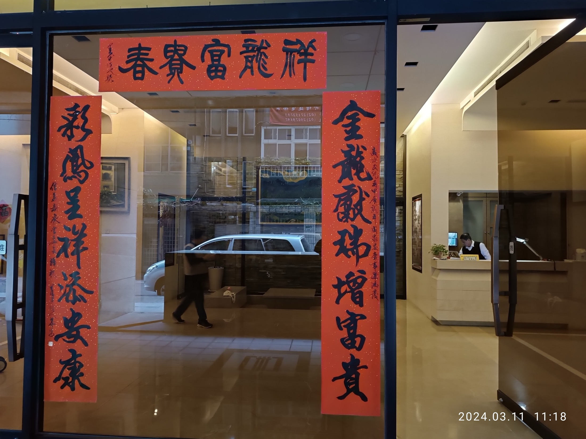

TAICHUNG
HSINCHU
TAIPEI
AUGUST 1-3, 2026 · RMQ IN/OUT
The Summer of Taipei
타이중에서 들어와 신주를 지나 타이베이에 머무는 2박3일. 이동은 짧게, 도시는 선명하게.
Fare
Planning
ROUTE MAP
서쪽 도시축만 간결하게.
홈에서는 디테일을 늘어놓지 않고 전체 동선만 본다. 날짜별 세부 코스는 상단의 1일차, 2일차, 3일차에서 확인한다.
Google Maps KML